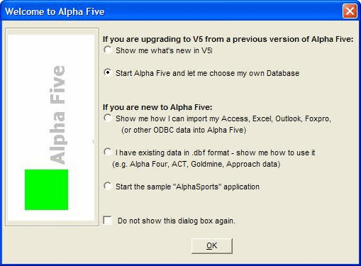

Welcome to Alpha Five
The person who installs Alpha Five must have administrator rights. Users of Alpha Five do not require administrator rights.Alpha Five is a relational database management system for entering, processing, and outputting information. Alpha Five provides you with a rich environment to easily create sophisticated databases and design efficient methods for data entry and output.

Welcome to Alpha Five Screen
The Welcome to Alpha Five screen lets you choose a way to get started quickly using Alpha Five. Select an option and click OK.
 Note : To prevent the
Welcome to Alpha Five screen from appearing
again, select Do not show this dialog box again.
Note : To prevent the
Welcome to Alpha Five screen from appearing
again, select Do not show this dialog box again.